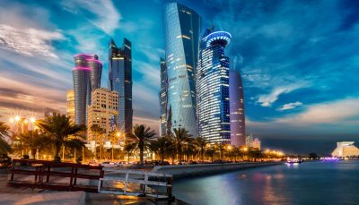
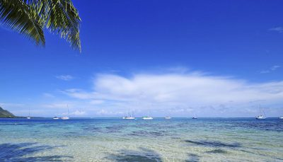

Find Your Travel Destination Right Away
Look through a great deal of amazing places to discover the perfect getaway for you.
Destinations Guides
Paris
Paris rarely disappoints. Home to beautiful architecture, arresting art and the world’s finest restaurants, only the hard–hearted will leave the City of Light without falling in love.
Qatar
The eyes of the world are on Qatar right now. Following the discovery of oil in the 1940s, this small Gulf state has been catapulted from a small fishing and trading hub to one of the richest (per capita) countries in the world.
The Islands of Tahiti
The Islands of Tahiti are known for their laid-back vibes. Expect romantic sunsets and giant curls of turquoise breaking over reefs. Remote and pristine, the islands give you a glimpse of paradise on Earth.